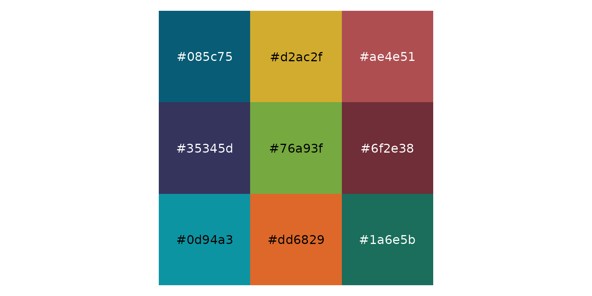
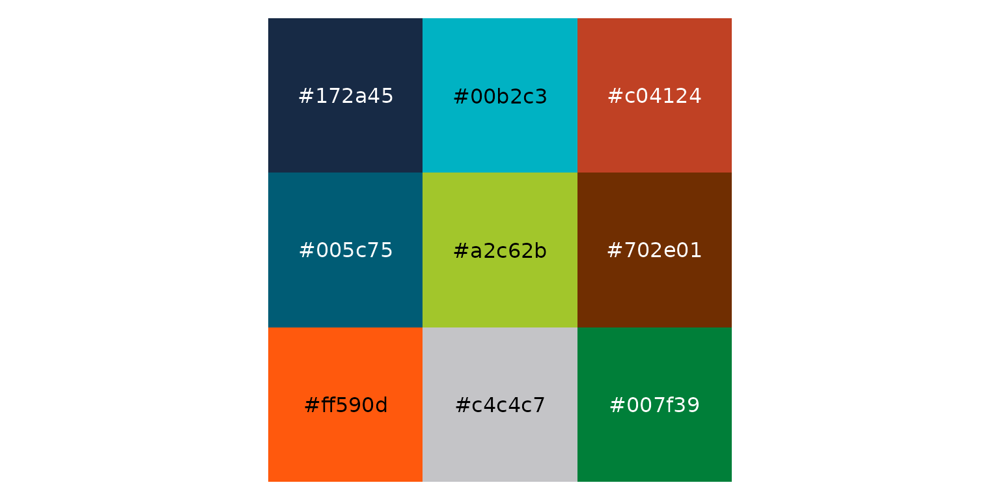
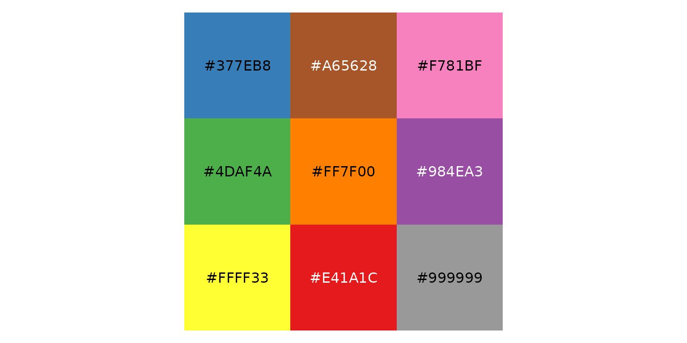
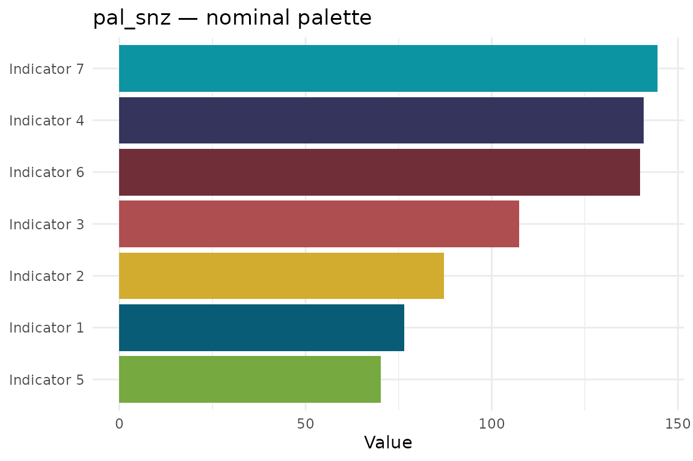
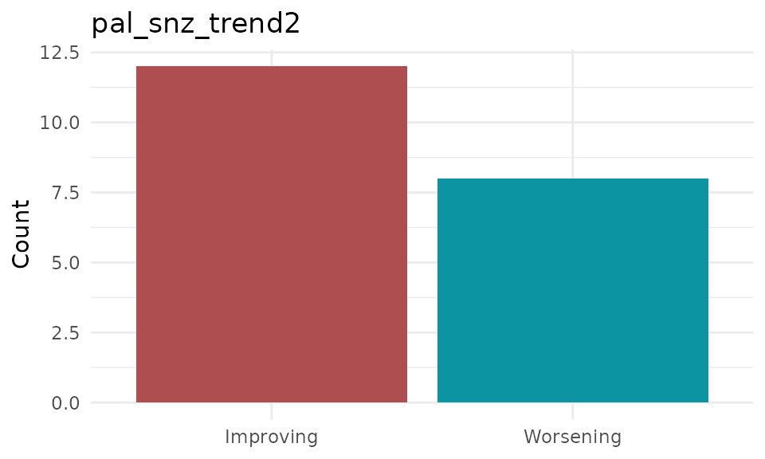
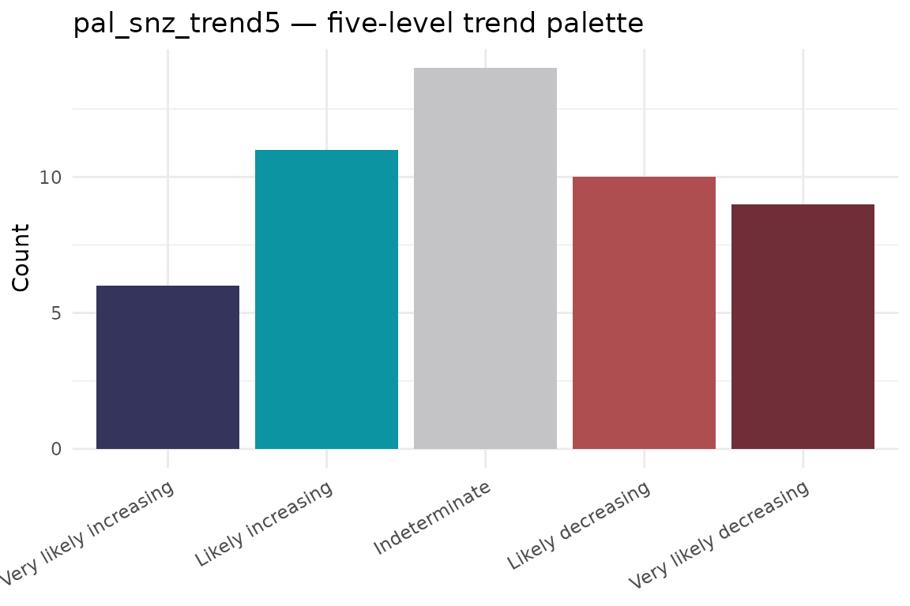
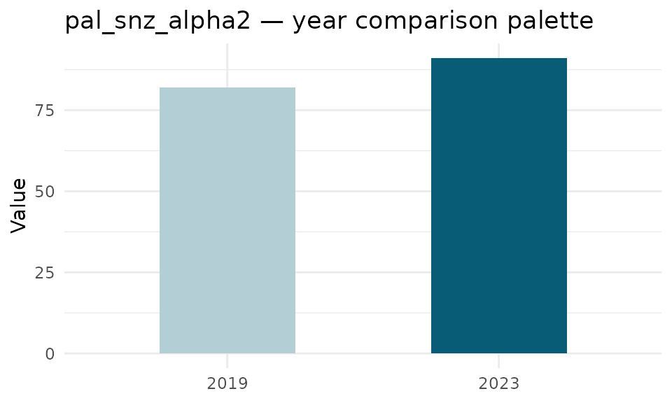
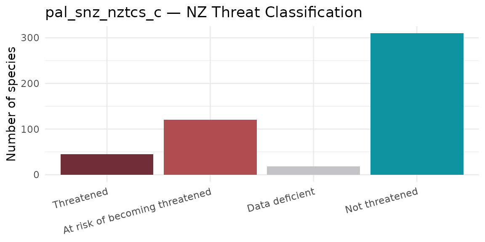
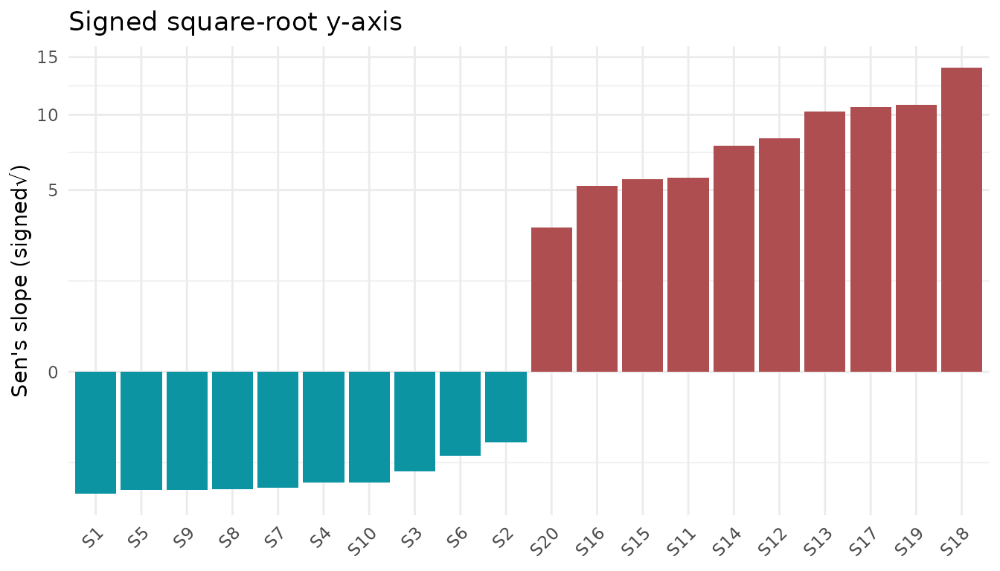

er.helpers provides two families of colour palettes tailored for environmental reporting at Statistics New Zealand:
| Family | Prefix | Use case |
|---|---|---|
| Statistics NZ web | pal_snz_* |
StatsNZ website publications |
| EA19 report | pal_ea19_* |
Environment Aotearoa 2019 print report |
| Map / point | pal_point_* |
Spatial maps and scatter plots |
Within each family there are palettes for different situations:
| Suffix | Purpose |
|---|---|
| (none) | Nominal (unordered) categorical variables |
_alpha2 |
Comparing a current year to one past year |
_trend2 |
Two-level ordinal trend (e.g. improving / worsening) |
_trend3 |
Three-level ordinal trend (e.g. improving / indeterminate / worsening) |
_trend5 |
Five-level ordinal trend |
_nztcs_c |
NZ Threat Classification System — categories |
_nztcs_s |
NZ Threat Classification System — sub-categories (SNZ only) |
An additional signed_sqrt_trans() scale transformation is useful for visualising trend magnitudes that span both negative and positive values.
Use scales::show_col() to display any palette:
scales::show_col(pal_snz, borders = NA)
scales::show_col(pal_ea19, borders = NA)
scales::show_col(pal_point_set1, borders = NA)
Use the base pal_snz / pal_ea19 palettes with scale_fill_manual() or scale_colour_manual() for unordered categorical variables:
set.seed(1)
indicator_data <- tibble(
indicator = paste0("Indicator ", 1:7),
value = runif(7, 50, 150)
)
ggplot(indicator_data, aes(x = reorder(indicator, value), y = value,
fill = indicator)) +
geom_col(show.legend = FALSE) +
scale_fill_manual(values = pal_snz) +
coord_flip() +
labs(title = "pal_snz — nominal palette", x = NULL, y = "Value") +
theme_minimal()
Trend palettes are designed to pair with order_likelihood_levels() so that colours align with the direction and strength of a trend.
trend2_df <- tibble(
trend = factor(c("Improving", "Worsening")),
n = c(12, 8)
)
ggplot(trend2_df, aes(x = trend, y = n, fill = trend)) +
geom_col(show.legend = FALSE) +
scale_fill_manual(values = pal_snz_trend2) +
labs(title = "pal_snz_trend2", x = NULL, y = "Count") +
theme_minimal()
set.seed(7)
p_values <- runif(50)
trend5_df <- tibble(
p_value = p_values,
likelihood = get_likelihood_category(p_value, term_type = "increasing-decreasing") |>
order_likelihood_levels()
) |>
count(likelihood)
ggplot(trend5_df, aes(x = likelihood, y = n, fill = likelihood)) +
geom_col(show.legend = FALSE) +
scale_fill_manual(values = pal_snz_trend5) +
labs(title = "pal_snz_trend5 — five-level trend palette",
x = NULL, y = "Count") +
theme_minimal() +
theme(axis.text.x = element_text(angle = 30, hjust = 1))
pal_snz_alpha2 and pal_ea19_alpha2 use a tinted base colour for the earlier year and the full base colour for the current year:
comparison_df <- tibble(
year = factor(c(2019, 2023), levels = c(2019, 2023)),
value = c(82, 91)
)
ggplot(comparison_df, aes(x = year, y = value, fill = year)) +
geom_col(show.legend = FALSE, width = 0.5) +
scale_fill_manual(values = pal_snz_alpha2) +
labs(title = "pal_snz_alpha2 — year comparison palette",
x = NULL, y = "Value") +
theme_minimal()
pal_snz_nztcs_c (four categories) and pal_snz_nztcs_s (nine sub-categories) are named vectors, so they map automatically to factor levels:
nztcs_df <- tibble(
status = factor(names(pal_snz_nztcs_c),
levels = names(pal_snz_nztcs_c)),
n = c(45, 120, 18, 310)
)
ggplot(nztcs_df, aes(x = status, y = n, fill = status)) +
geom_col(show.legend = FALSE) +
scale_fill_manual(values = pal_snz_nztcs_c) +
labs(title = "pal_snz_nztcs_c — NZ Threat Classification",
x = NULL, y = "Number of species") +
theme_minimal() +
theme(axis.text.x = element_text(angle = 15, hjust = 1))
When a continuous variable spans a wide range of both positive and negative values, a standard linear scale compresses small values near zero. The signed_sqrt_trans() transformation stretches both tails symmetrically:
set.seed(22)
slopes_df <- tibble(
station = paste0("S", 1:20),
slope = c(rnorm(10, mean = -2, sd = 0.5),
rnorm(10, mean = 8, sd = 3))
)
ggplot(slopes_df, aes(x = reorder(station, slope), y = slope,
fill = slope > 0)) +
geom_col(show.legend = FALSE) +
scale_y_continuous(trans = signed_sqrt_trans()) +
scale_fill_manual(values = c("#0D94A3", "#AE4E51")) +
labs(title = "Signed square-root y-axis",
x = NULL, y = "Sen's slope (signed\u221a)") +
theme_minimal() +
theme(axis.text.x = element_text(angle = 45, hjust = 1))
#> # A tibble: 17 × 3
#> Object Colours Description
#> <chr> <int> <chr>
#> 1 pal_snz 9 Nominal — StatsNZ web
#> 2 pal_snz_alpha2 2 Year comparison — StatsNZ web
#> 3 pal_snz_trend2 2 Trend 2-level — StatsNZ web
#> 4 pal_snz_trend3 3 Trend 3-level — StatsNZ web
#> 5 pal_snz_trend5 5 Trend 5-level — StatsNZ web
#> 6 pal_snz_nztcs_c 4 NZ TCS categories — StatsNZ web
#> 7 pal_snz_nztcs_s 9 NZ TCS sub-categories — StatsNZ web
#> 8 pal_ea19 9 Nominal — EA19 report
#> 9 pal_ea19_alpha2 2 Year comparison — EA19 report
#> 10 pal_ea19_trend2 2 Trend 2-level — EA19 report
#> 11 pal_ea19_trend3 3 Trend 3-level — EA19 report
#> 12 pal_ea19_trend5 5 Trend 5-level — EA19 report
#> 13 pal_ea19_nztcs_c 4 NZ TCS categories — EA19 report
#> 14 pal_point_set1 9 Nominal — maps/points
#> 15 pal_point_trend2 2 Trend 2-level — maps/points
#> 16 pal_point_trend3 3 Trend 3-level — maps/points
#> 17 pal_point_trend5 5 Trend 5-level — maps/points